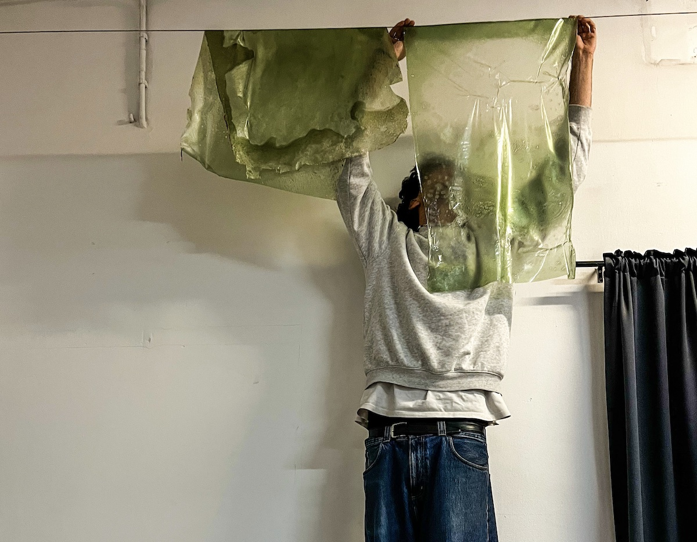

Welcome. This space collects the works, reflections and processes of the first term of the Master in Design for Emergent Futures at IAAC, Barcelona.
Write here what you explored during Term One. What questions did you bring with you? What methods did you use? What perspectives shifted? This is your space — write in a personal tone, like a journal, or more formally, like an abstract. Both work. The important thing is that it sounds like you.
2
Term One
A short caption or description of the image or the theme it represents.
Projects of the term